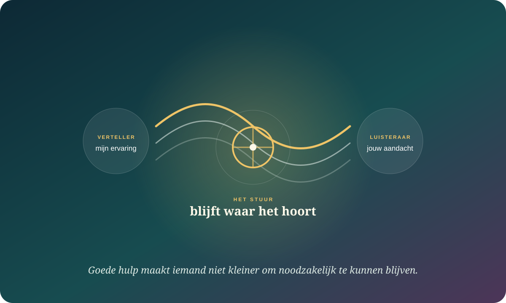

De kern in gewone taal
Goed luisteren is geen stilte vóór jouw advies. Het is ruimte waarin de ander zichzelf beter kan horen.
Actief luisteren wordt vaak herleid tot knikken en samenvatten. Nieuwere relationele wetenschap kijkt breder: voelt de spreker zich begrepen, gewaardeerd en verzorgd, blijft verschil mogelijk en ondersteunt de reactie diens autonomie? Hulp is niet beter omdat ze groter is. Ze is beter wanneer ze past.
Vraag wat er werkelijk speelt voordat je een richting aanbiedt.
Goede intentie garandeert niet dat steun als passend wordt ervaren.
Help iemand meer handelingsruimte voelen, niet meer afhankelijkheid.
Luisteren verandert niet alleen wat gezegd wordt, maar ook wat iemand durft te onderzoeken.
Een overzicht van Reis en Itzchakov uit 2023 verbindt hoogwaardig luisteren met ervaren partnerresponsiviteit. In experimenteel onderzoek naar meningsverschil bleken sprekers tegenover een aandachtige luisteraar minder defensief en soms minder extreem te worden — niet doordat de luisteraar hen overtuigde, maar doordat onderzoeken minder bedreigend werd.

Aandacht
Ik ben niet alvast mijn antwoord aan het bouwen.
De spreker merkt aanwezigheid via timing, vervolgvragen en het oppikken van betekenisvolle details.
Begrip
Ik probeer jouw logica te zien.
Begrijpen is geen akkoord. Het betekent dat jouw ervaring niet eerst op mijn wereldbeeld hoeft te lijken.
Positieve intentie
Ik behandel je als iemand die ertoe doet.
Warmte zonder nieuwsgierigheid wordt snel geruststelling; nieuwsgierigheid zonder warmte kan verhoor voelen.
Open verschil
Ik hoef mijn visie niet te verbergen om te luisteren.
Luisterkwaliteit en instemming zijn niet hetzelfde, al kan zichtbaar verschil het gevoel gehoord te zijn beïnvloeden.
Steun werkt via wat de ander ervaart — niet alleen via wat jij bedoelde.
Responsiviteit gaat over het gevoel dat een ander jouw kern ziet en daarop antwoordt. Dat is geen techniek die je kunt afdwingen met de perfecte zin. Het ontstaat uit afstemming: klopt jouw reactie met wat deze persoon, op dit moment, in deze relatie nodig heeft?
“Je hebt door waar dit voor mij over gaat.”
Niet alleen de feiten, ook de betekenis en de spanning worden opgepikt.
“Mijn ervaring mag bestaan.”
Valideren betekent niet dat iedere interpretatie juist is; wel dat de ervaring niet belachelijk wordt gemaakt.
“Mijn welzijn doet ertoe.”
Warmte, tijd en concrete steun kunnen laten voelen dat iemand niet alleen staat.
“Je geeft niet automatisch wat jij graag geeft.”
Dezelfde persoon kan vandaag nabijheid willen en morgen informatie of stilte.
“Herhaal wat je hoorde” was een begin, geen eindpunt.
De luisteraar gebruikt correcte technieken.
De humanistische traditie bracht empathie, echtheid en onvoorwaardelijke waardering centraal. Training maakte daarvan soms een checklist: oogcontact, knikken, parafraseren.
De spreker ervaart responsiviteit én autonomie.
Nieuw werk bestudeert de dynamiek tussen luisteraar en spreker, de invloed van verschil en de vraag of steun de handelingsruimte van de ontvanger voedt.
Geen performance: mechanisch spiegelen kan juist afstandelijk voelen. “Ik hoor dat je boos bent” helpt weinig wanneer je de volgende minuut alsnog beslist wat de ander moet doen.
Te veel hulp kan iemand verlichten én verkleinen.
Een meta-analyse uit 2022 vond een gemiddelde positieve samenhang tussen partnersteun en doeluitkomsten; responsieve en praktische steun hingen samen met vooruitgang, negatieve steun met slechtere uitkomsten. Maar “praktisch” betekent niet automatisch “overnemen”. Een studie uit 2024 op het werk koppelde ongevraagde hulp aan frustratie van autonomie en competentie, meer piekeren en minder mentale afstand na het werk.
Ik geef de volledige oplossing.
Dit kan nodig zijn bij crisis of beperkte capaciteit, maar maakt de helper gemakkelijk onmisbaar.
Ik vergroot jouw mogelijkheid om zelf te handelen.
Informatie, een eerste stap, oefenruimte of een keuze kan competentie ondersteunen.
Ik neem tijdelijk iets over dat jij wilt afstaan.
Autonomie betekent niet alles alleen doen. Vrij gekozen afhankelijkheid kan juist ruimte geven.
Ik help, dus mijn richting geldt.
Schuld, druk, ongevraagd toezicht en conditionele goedkeuring maken van zorg een stuurmechanisme.
De helper beoordeelt de inspanning. De ontvanger beoordeelt wat er gebeurde.
Onderzoek naar interpersoonlijke emotieregulatie laat zien dat mensen die proberen te helpen hun eigen bijdrage vaak als relationeel gunstiger beoordelen dan degene die geholpen wordt. Dat is geen bewijs dat helpers zelfingenomen zijn. Zij voelen hun intentie, inspanning en bezorgdheid van binnenuit; de ander voelt vooral de pasvorm en het effect.
“Ik bedoelde het goed” verklaart de actie. Het voltooit het gesprek niet.
Vraag na afloop: “Wat in mijn reactie hielp, wat maakte het lastiger en wat wil je de volgende keer anders?” Dat maakt steun leerbaar zonder de ander tot beoordelaar van jouw goedheid te maken.
Wie maakt luisteren minder braaf en hulp minder vanzelfsprekend?
Guy Itzchakov
Wat wordt mogelijk wanneer iemand zich echt beluisterd voelt?
Onderzoekt luisterkwaliteit, defensiviteit, zelfinzicht en gesprekken bij verschil.
Harry T. Reis
Wanneer voelt een reactie werkelijk responsief?
Verbindt luisteren met begrepen, gewaardeerd en verzorgd worden in relaties.
Netta Weinstein
Kan luisteren tegelijk nabijheid en autonomie voeden?
Onderzoekt zelfdeterminatietheorie, motivatie en de kwaliteit van relationele aandacht.
Judith M. Vowels
Welke partnersteun helpt doelen — en hoe sterk is het bewijs?
Bundelt steunonderzoek en maakt tegelijk de methodologische beperkingen zichtbaar.
Vervang raden door afstemmen.
“Wil je dat ik vooral luister, meedenk of iets doe?”
Geef drie concrete routes. “Wat heb je nodig?” kan te groot zijn wanneer iemand overspoeld is.
“Heb ik goed dat vooral … zwaar is?”
Vat betekenis samen, niet ieder detail. Laat ruimte voor correctie.
“Mag ik één gedachte aanbieden?”
Toestemming maakt advies niet automatisch goed, maar vertraagt de reflex om het stuur te grijpen.
“Wat wil jij als eerste stap?”
Als de ander vastzit: bied opties en laat weigeren mogelijk. Autonomie is ook “nog niet”.
Bouw een antwoord dat nabij is zonder te besturen.
Van reddingsreflex naar respons
Kies één echt gesprek. Je hoeft hier niemand perfect te helpen; je oefent alleen pasvorm.
Er wordt niets verstuurd. Je antwoorden blijven alleen in deze browser bewaard.
Waarop dit dossier steunt.
- Overzicht · 2023Reis & Itzchakov — Do you hear me?
Over de wisselwerking tussen luisterkwaliteit en ervaren partnerresponsiviteit.
- Vier experimenten · 2023Itzchakov e.a. — Listening to understand
Hoogwaardig luisteren tijdens meningsverschil en de defensiviteit van sprekers.
- Meta-analyse · 2022Vowels e.a. — Partner support and goal outcomes
195 effecten uit 36 steekproeven, plus methodologische kritiek.
- Twee studies · 2024Baethge e.a. — When help is not wanted
Ongevraagde hulp, frustratie van autonomie en competentie, en herstel na het werk.
- Relatiestudie · 2024López-Pérez e.a. — How can I help?
Strategieën voor interpersoonlijke emotieregulatie en verschillen tussen helper en ontvanger.
- Kader · 2024Niven — Social dynamics in interpersonal emotion regulation
Directe en indirecte processen waardoor emoties tussen mensen veranderen.
- Koppelonderzoek · 2022Kil e.a. — Autonomy support in couples
Autonomie-ondersteunend gedrag en relatiekwaliteit bij koppels.